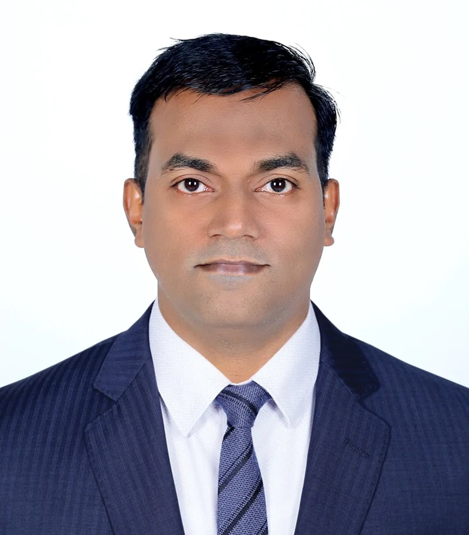

Career guidance
A considered approach to educational choices, personal interests and future career pathways.
CAREER CONSULTANT · COLUMNIST · FOUNDER
Sulaiman Oorakam
Connecting career aspirations with educational opportunities, in India and beyond.

Sulaiman Oorakam is a career consultant, columnist and the founder of Career Map.
His public work brings together career guidance, international education and writing about educational opportunities. Through Career Map, the focus is on helping students explore pathways that align with their interests and aspirations.
His published contributions include scholarship coverage for Madhyamam, extending career information to a wider readership.
02 / AREAS OF FOCUS
Exploring the intersection of individual potential and educational opportunity.
A considered approach to educational choices, personal interests and future career pathways.
A wider view of study opportunities, institutions and the possibilities beyond borders.
Making information about scholarships and educational opportunities easier to discover.
Sharing perspectives on education and career opportunities through published contributions.
THE FOUNDER’S DESK
Connecting ambition
with opportunity.
Founded by Sulaiman Oorakam, Career Map is an educational consultancy offering guidance on academic and career pathways, including overseas education.
Discover Career Map ↗03 / WORDS & PERSPECTIVES
Selected writing and public profiles.
More perspectives, as they are published.
MADHYAMAM · 11 SEPTEMBER 2022
Published scholarship coverage by Sulaiman Oorakam. Original article in Malayalam.
Read the article ↗PROFESSIONAL PROFILE
Explore Sulaiman’s professional profile and public updates on LinkedIn.
Visit LinkedIn ↗04 / IN FOCUS
A space for talks, interviews and moments from the journey.
05 / LET’S CONNECT
For career guidance, connect through Career Map.
For professional conversations, find Sulaiman on LinkedIn.